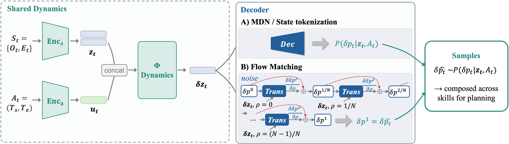
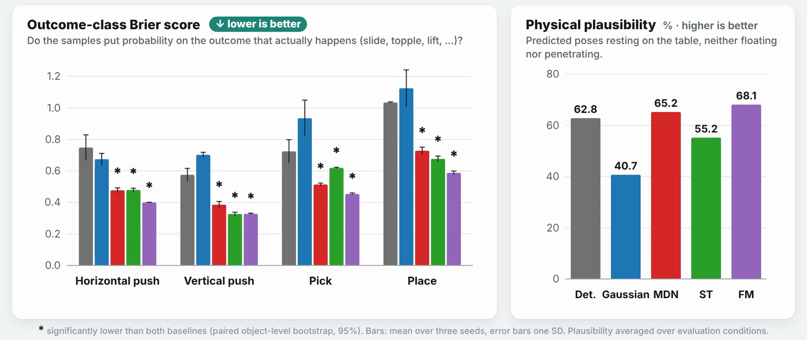
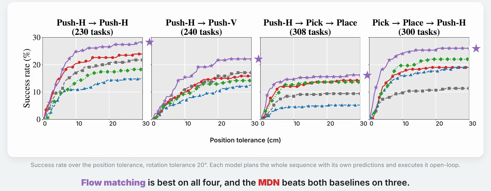

The same skill does not always end the same way.
Small variations in contact conditions or object geometry produce qualitatively different object motions under nearly identical states and actions.
What happens
Deterministic
Gaussian
Multimodal
Abstract
Learning to predict the effects of contact-rich manipulation skills requires models that represent distinct outcome modes rather than a single expected result. Even for basic skills such as pushing, picking, and placing, small variations in contact conditions or object geometry can produce qualitatively different object motions under nearly identical states and actions. Deterministic and Gaussian models tend to average over these alternatives or represent them as a single broad distribution, obscuring distinct modes such as sliding, toppling, and rotating. We study probabilistic skill-effect models that learn multimodal distributions over object pose changes given partial point clouds and actions. We instantiate this abstraction with three representative model classes: mixture density networks, state tokenization, and flow matching, each paired with latent dynamics for next-step prediction. Across diverse objects and skills, explicitly multimodal models predict which outcome occurs more accurately than deterministic and Gaussian baselines. In planning, flow matching significantly improves task success over the deterministic baseline on every skill and achieves the highest success on every multi-step sequence. On a real robot, probabilistic models succeed at pick about twice as often as the deterministic baseline.

Method
Single-outcome models
Deterministic and Gaussian models average over these alternatives or represent them as a single broad distribution.
Deterministic
Gaussian
Our probabilistic skill-effect models
Mixture density network
A mixture of five Gaussians.
State tokenization
Probabilities over discrete tokens.
Flow matching
Noise carried to samples in five steps.
Multimodal probabilistic models represent distinct modes.
Flow matching is the most accurate, and the MDN is the fastest to plan with.
| Det. / Gaussian | MDN | State tokenization | Flow matching | |
|---|---|---|---|---|
| Multimodality | No | Yes | Yes | Yes |
| Output space | Continuous | Continuous | Discrete | Continuous |
| Plausibility | Medium / Lower | Higher | Medium | Higher |
| Quantization-free | Yes | Yes | No | Yes |
| Inference speed | Fast | Fast | Moderate | Slow |
Prediction
Simulation pose predictions
Ground-truth outcome in gray outline, predicted samples in each model's color.
Prediction quality
Multimodal models predict which outcome occurs more accurately on every skill,
and MDN and flow matching give the most physically plausible poses.
Det.GaussianMDNSTFM

Planning
Multi-step planning in simulation
A multimodal model leads every multi-step sequence.
Det.GaussianMDNSTFM

Real robot
On a real robot
On pick, every probabilistic model succeeded about twice as often as the deterministic model.
Three seen and two unseen objects, three start and goal pairs each.
Push → pick → place from the same start toward the same goal. One run per model, each planning the whole sequence with its own predictions. Played at 6× speed.
BibTeX
@misc{kim2026grounded_in_contact,
title={Grounded in Contact: Reducing Floating and Interpenetration Artifacts with Multimodal Skill-Effect Models},
author={Siyeon Kim and Mohanraj Devendran Shanthi and Joseph C. Liechty and Tucker Hermans},
year={2026},
eprint={2611.29662},
archivePrefix={arXiv},
primaryClass={cs.RO},
url={https://arxiv.org/abs/2611.29662}
}